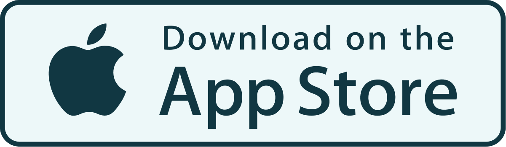

Aplicação para transparência política
Uma aplicação para
transparência parlamentar.
Investigação, redesign e prototipagem de uma interface para acompanhar informação parlamentar portuguesa.
Acompanha o que se decide.
Filtra pelo que te importa.
Sabe como os partidos votaram.
PoliTrack agrega dados reais da Assembleia da República [www.parlamento.pt] em tempo real, com motor de busca semântico e classificação de iniciativas por tema.
Vídeos a adicionar
Edita js/data.js e substitui os VIDEO_ID
Faz download. É gratuito.
Acompanha e testa o projeto!

Obrigada!
Obrigada a quem ajudou, testou e instalou.
Juntem-se, está disponível e é gratuito!
Sigam-nos no Instagram: @politrackpt